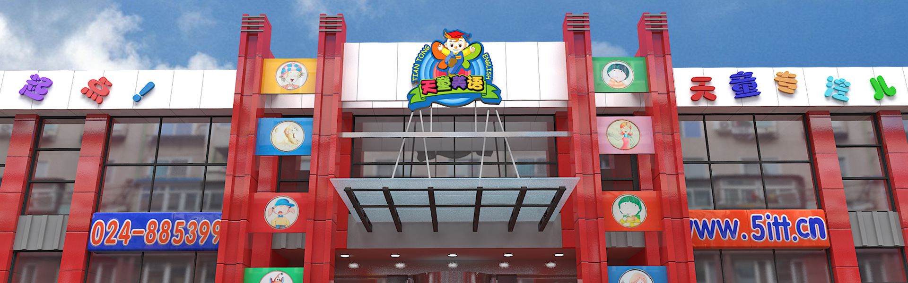

— 天童简介 —
2004年7月4日，天童教育集团成立。至今，天童遍布辽宁、吉林、黑龙江、内蒙古、北京、天津、山东、陕西、江苏、河南、安徽、湖北、四川、湖南、江西、浙江、重庆、云南、广东、海南、甘肃、贵州、福建等全国主要省份，拥有公司26家，分校82所，精英讲师6000名。
未来，天童教育集团计划在全国开设100所直营校区，1000所授权加盟校；届时，将有1万名专业的教职员工，为全国100万名学生提供英语教学服务！
— 天童师资 —
天童拥有一套国际水准的师资培训系统，并投入3000万巨资建立自己的管理学院，高薪聘请国际最专业的儿童英语教育培训专家，每月对所有教师进行系统的培训和考评，同步国际最先进的教学经验，最大化的保证天童教师的教学专业度。
新进教师，全部要在管理学院进行为期一个月的封闭式培训，培训内容包括授课标准流程、授课能力指标、教学技巧、基础教育理论、幼儿心理学等近20个科目，主训讲师由在一线拥有十年以上教学经验的资深教师担任。
天童教师团队集结了全国最优秀的英语教学人才，所有教师均由层层考核与选拔出来的高级资深教师组成，并针对教师自身特长进行专业定向教学，每个教学阶段选用在本阶段拥有丰富授课经验的教师，最大化的保证了孩子在本阶段的学习成果，天童教师对每一个孩子都将负责到底。